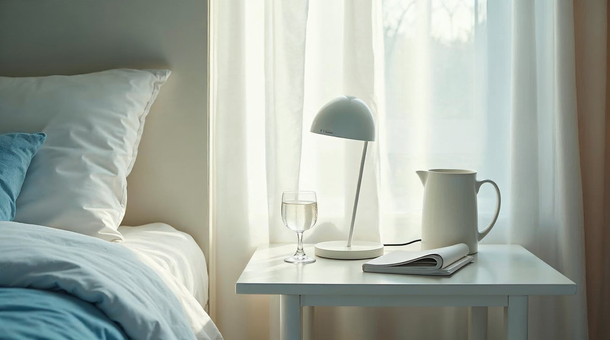
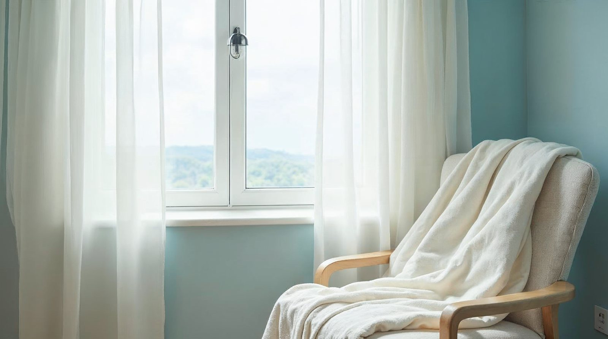
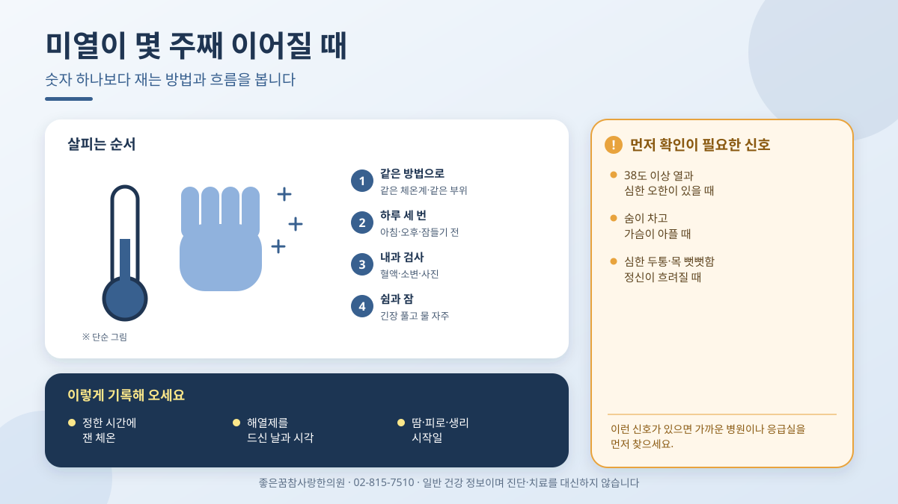

이종호 한의사 감수좋은꿈참사랑한의원 대표원장 (한의사 면허번호 19769)발행 2026-11-26 · 수정 2026-11-26
이 글의 차례
오후 세 시쯤이면 얼굴이 화끈거리고 몸이 나른해집니다. 체온계를 귀에 대 보면 37.3도, 열이라고 하기엔 낮고 괜찮다고 하기엔 찜찜한 숫자입니다. 감기도 아닌데 이런 날이 몇 주째 이어지니 혹시 어디가 잘못된 건 아닌지 걱정이 커집니다. 진료실에서 종종 듣는 이야기입니다.
미열은 보통 37도 초반에서 37도 후반 사이의 체온이 이어지는 것을 말합니다. 고열처럼 몸이 펄펄 끓지는 않지만, 몸이 무겁고 피곤하며 집중이 잘 안 되는 느낌이 함께 오는 경우가 많습니다. 그래서 일상은 그럭저럭 하면서도 늘 컨디션이 반쯤 꺼진 상태로 지내게 됩니다.
먼저 알아 두실 것은 사람의 체온이 하루 안에서도 오르내린다는 점입니다. 새벽에 가장 낮고 늦은 오후에 가장 높으며, 그 차이가 0.5도 이상 나기도 합니다. 식사 뒤, 운동 뒤, 더운 방에 있을 때, 여성은 배란 뒤에도 체온이 조금 오릅니다.
그래서 미열을 살필 때는 숫자 하나보다 언제, 어떻게 쟀는지가 중요합니다. 이 글에서는 체온을 제대로 재고 기록하는 방법, 병원에서 먼저 받아 볼 검사, 검사에서 큰 이상이 없을 때 한의원에서 함께 살피는 부분을 차근차근 말씀드리겠습니다.
미열은 어떤 상태를 말하나요
일반적으로 겨드랑이나 귀에서 잰 체온이 37.5도 안팎을 넘으면 열이 있다고 보고, 그보다 조금 낮은 37도 초반에서 중반 사이가 이어지면 미열이라고 부르는 경우가 많습니다. 다만 체온계 종류와 재는 부위에 따라 숫자가 조금씩 다르게 나옵니다.
평소 체온이 낮은 분은 37도만 되어도 몸이 뜨겁게 느껴지고, 평소 체온이 조금 높은 분은 37.2도도 평상시 숫자일 수 있습니다. 그래서 내 평소 체온이 어느 정도인지를 먼저 알아 두는 것이 미열을 판단하는 출발점입니다.
몇 주 이상 이어지는 미열은 한 번은 원인을 살펴보는 것이 좋습니다. 특히 피로, 체중 감소, 밤 식은땀, 기침, 관절통 같은 다른 신호가 함께 있다면 더욱 그렇습니다.
왜 미열이 오래갈까요?
가장 흔한 경우는 감기나 몸살, 장염 같은 감염을 앓고 난 뒤 몸이 회복하는 동안 미열이 한동안 남는 경우입니다. 바이러스가 지나간 뒤에도 몸의 면역이 한동안 바쁘게 움직이면서 피로와 미열이 몇 주 이어지기도 합니다.
몸 어딘가에 작은 염증이 오래 남아 있을 때도 미열이 납니다. 치아나 잇몸, 부비동, 요로, 편도 같은 곳의 염증이 그렇습니다. 갑상선 기능이 지나치게 높아졌거나, 자가면역 질환이 있을 때도 미열이 함께 나타날 수 있습니다. 드물지만 결핵이나 혈액 질환처럼 확인이 필요한 원인도 있습니다.
검사에서 뚜렷한 원인이 나오지 않는 미열도 꽤 있습니다. 오랜 긴장과 스트레스, 수면 부족, 과로가 이어질 때 체온 조절이 흔들리면서 몸이 뜨겁게 느껴지고 실제로 체온이 조금 오르는 분도 있습니다. 이런 경우를 스트레스성 미열이라고 부르기도 합니다.
빈혈이나 탈수가 있을 때도 몸이 나른하고 뜨겁게 느껴질 수 있습니다. 물을 적게 드시는 분, 생리량이 많은 분, 끼니를 자주 거르는 분이라면 이런 부분도 함께 살펴봐야 합니다. 미열 하나에도 여러 갈래의 이유가 겹쳐 있는 경우가 많습니다.

체온은 이렇게 재 보세요
미열을 살필 때는 같은 체온계로, 같은 부위를, 같은 조건에서 재는 것이 가장 중요합니다. 귀 체온계라면 같은 쪽 귀를 쓰고, 겨드랑이라면 땀을 닦고 팔을 꼭 붙인 채 안내된 시간만큼 기다립니다.
식사 직후, 운동 직후, 샤워 직후, 뜨거운 음료를 마신 직후에는 체온이 일시적으로 오르니 30분 정도 쉰 뒤 재 주세요. 하루 세 번, 아침에 일어나서, 오후 세 시 무렵, 잠들기 전처럼 시간을 정해 재면 흐름이 잘 보입니다. 몸이 유난히 뜨겁게 느껴지는 순간에 한 번 더 재 두셔도 좋습니다.
여성이라면 생리 주기를 함께 적어 주세요. 배란 뒤부터 생리 전까지는 체온이 0.3~0.5도 정도 오르는 것이 자연스러운 흐름입니다. 이 시기에만 미열이 있다면 주기에 따른 변화일 수 있습니다.
내과에서 먼저 받아 보는 검사
몇 주 이상 이어지는 미열이라면 내과에서 진찰과 기본 검사를 받아 보시길 권합니다. 보통 혈액 검사로 염증 수치, 빈혈, 백혈구, 갑상선 기능, 간 수치 등을 살펴보고, 소변 검사와 흉부 사진을 함께 보는 경우가 많습니다.
증상에 따라 부비동이나 치아, 편도 쪽을 확인하거나, 자가면역 관련 검사를 추가하기도 합니다. 한 번에 모든 검사를 하기보다 흔한 원인부터 차례로 확인해 가는 경우가 많습니다. 어떤 검사를 할지는 진찰한 선생님이 정하시니, 체온 기록과 함께 있었던 증상을 정리해 가시면 검사를 고르는 데 큰 도움이 됩니다.
검사에서 큰 이상이 없다는 말을 들으면 안심이 되면서도, 그럼 이 열감은 뭘까 하는 궁금증이 남습니다. 이때부터 피로와 잠, 긴장, 생활 리듬을 하나씩 나눠 살펴보는 일이 시작됩니다.
미열과 헷갈리기 쉬운 느낌
몸이 뜨겁다고 느끼는데 막상 재 보면 정상 체온인 경우가 많습니다. 얼굴이나 손바닥, 발바닥만 화끈거리는 열감은 체온이 오른 것이 아니라 혈관이 넓어지면서 생기는 느낌인 경우가 많습니다. 긴장하거나 화가 나거나 갱년기 무렵에 흔합니다.
한의학에서는 오후나 저녁에 손발바닥이 뜨겁고 가슴이 답답하며 잠들 때 땀이 나는 모습을 오심번열이나 허열이라고 표현해 왔습니다. 몸이 지치고 진액이 부족할 때 나타나는 열감으로 보고, 실제 체온과 함께 살펴봅니다.
그래서 진료실에서는 실제로 잰 체온과 뜨겁다고 느끼는 느낌을 나눠서 여쭙니다. 둘이 함께 가는지, 느낌만 있는지에 따라 살피는 방향이 달라집니다.
스트레스와 과로가 만드는 열감
오랜 기간 긴장한 채로 지내면 몸은 늘 비상 상태처럼 움직입니다. 심장이 조금 빠르게 뛰고, 근육이 굳어 있고, 잠이 얕아집니다. 이런 상태가 이어지면 체온 조절도 흔들려 오후마다 몸이 뜨겁고 나른해지는 분이 있습니다.
시험이나 마감, 이직, 간병처럼 긴장이 큰 시기에 미열이 시작되었다면 이런 흐름을 함께 생각해 볼 수 있습니다. 이 경우 해열제보다 쉼과 잠, 긴장을 풀어 주는 시간이 더 도움이 되는 경우가 많습니다.
다만 스트레스 때문이라고 단정하기 전에 내과 검사로 다른 원인을 먼저 확인하는 것이 순서입니다. 검사로 큰 원인을 확인한 뒤에야 마음 놓고 생활과 긴장을 살필 수 있습니다.
미열이 있는 분들이 자주 헷갈리는 것
첫째, 체온계 숫자를 그대로 믿는 것입니다. 귀 체온계는 귀지를 비롯해 재는 각도에 따라 숫자가 달라지고, 겨드랑이 체온계는 팔을 덜 붙이면 낮게 나옵니다. 숫자가 들쭉날쭉하다면 체온계와 재는 방법부터 점검해 보세요.
둘째, 미열이니 별일 아니라고 오래 넘기는 것입니다. 대부분은 회복 과정이나 생활의 흐름 때문이지만, 몇 주 이상 이어지면 한 번은 기본 검사로 확인해 두는 것이 마음에도 편합니다.
셋째, 검사에서 이상이 없으니 기분 탓이라고 여기는 것입니다. 원인이 뚜렷하지 않아도 몸이 뜨겁고 나른한 느낌은 실제로 일상을 힘들게 합니다. 이상이 없다는 말은 큰 병이 아니라는 뜻이지, 불편이 없다는 뜻은 아닙니다.

계절과 환경이 체온에 주는 영향
여름에는 바깥 더위와 냉방을 오가며 체온 조절이 바빠져 오후마다 몸이 뜨겁고 나른하다는 분이 많습니다. 겨울에는 난방이 센 실내에 오래 있으면 얼굴이 달아오르고 체온이 조금 높게 나오기도 합니다.
두꺼운 이불을 덮고 자거나, 실내 온도가 높은 곳에서 일한 직후에 재면 숫자가 높게 나올 수 있습니다. 체온을 재기 전에는 너무 덥거나 춥지 않은 곳에서 잠시 쉬어 주세요.
환절기에는 감기 기운과 회복이 반복되며 미열이 이어지는 경우도 흔합니다. 이 시기에는 무리한 일정을 조금 덜어 내고 잠과 끼니를 먼저 챙기시길 권합니다.
먼저 이렇게 여쭙니다
처음 오시면 대략 이런 순서로 여쭙니다. 미리 생각해 오시면 이야기가 한결 수월해집니다.
- 미열은 언제부터, 하루 중 언제 주로 오르나요?
- 어떤 체온계로 어디를 재셨나요? 평소 체온은 어느 정도인가요?
- 최근 감기, 몸살, 장염, 치과 치료가 있으셨나요?
- 피로, 밤 식은땀, 체중 변화, 기침, 관절통이 함께 있나요?
- 내과에서 받은 검사와 결과는 어떠셨나요?
- 잠, 긴장, 생리 주기는 요즘 어떠신가요?
정확히 기억나지 않으셔도 괜찮습니다. 체온 기록 몇 날과 내과 검사 결과지만 있어도 이야기의 큰 줄기는 잡힙니다. 최근 여행이나 새로 시작한 약, 반려동물과의 접촉처럼 생활에서 달라진 일이 있었다면 그것도 함께 말씀해 주세요.
일상에서 먼저 해 볼 수 있는 것
- 같은 체온계로 하루 세 번, 정한 시간에 재고 적기
- 미지근한 물을 자주 나눠 마시기
- 잠드는 시각을 일정하게 맞추고 수면 시간 확보하기
- 오후에 몸이 뜨거워질 때 잠시 쉬며 숨을 길게 내쉬기
- 맵고 기름진 음식과 술은 잠시 줄이기
- 몸이 회복될 때까지 무리한 운동은 미루고 가볍게 걷기
몸이 뜨겁다고 찬 음료나 얼음물을 많이 드시면 오히려 소화가 불편해질 수 있습니다. 땀이 난 뒤에는 젖은 옷을 바로 갈아입어 몸이 식지 않게 해 주세요. 미지근한 물을 조금씩 자주 드시는 편이 몸에 부담이 적습니다.
해열제는 열이 높거나 몸이 많이 불편할 때 쓰는 약이라, 미열에 매일 습관처럼 드시면 열의 흐름을 읽기 어려워집니다. 해열제를 드셨다면 기록에 함께 적어 주세요.
한의원에서 함께 살필 수 있는 경우
- 내과 검사에서 큰 이상이 없는데 오후마다 미열과 나른함이 이어지는 경우
- 감기나 몸살을 앓은 뒤 미열과 피로가 몇 주째 남아 있는 경우
- 손발바닥이 뜨겁고 잠들 때 땀이 나며 잠이 얕은 경우
- 긴장이 큰 시기에 열감과 두근거림, 소화 불편이 함께 온 경우
좋은꿈참사랑한의원에서는 진찰을 마친 뒤 피로와 잠, 땀, 소화, 열감이 나타나는 시간을 함께 보고 지금 상태에 맞는 방향을 정합니다. 침이나 한약 상담 가운데 무엇이 맞는지는 진찰한 내용을 바탕으로 정합니다.
한약을 상의할 때는 드시는 약을 모두 확인하고 신중하게 정합니다. 처방받은 약은 상의 없이 멈추지 않으시고, 진료 중에도 열이 오르거나 새로운 증상이 생기면 내과에 다시 알리시는 것이 순서입니다. 임신 중이시거나 준비 중이라면 먼저 알려 주시고 산부인과와 상의해 주세요.
이렇게 기록해 오시면 상담이 쉬워집니다
- 하루 세 번 정해진 시간에 잰 체온
- 해열제를 드신 날과 시각
- 피로, 땀, 두근거림, 기침이 있었던 날
- 잠든 시각, 깬 시각, 밤에 깬 횟수
- 생리 시작일과 긴장이 컸던 날
2주만 적어 보셔도 미열이 하루 중 언제 오르는지, 어떤 날 심해지는지가 한눈에 보입니다. 그 기록은 내과 선생님께도 저에게도 무척 쓸모 있는 정보가 됩니다.
기록이 쌓이면 걱정도 조금 달라집니다. 막연히 늘 열이 있는 것 같던 느낌이, 사실은 오후 몇 시간에만 오르고 잠을 잘 잔 날에는 덜하다는 식으로 구체적인 모습을 갖게 됩니다. 그렇게 모습이 보이면 무엇을 바꿔 볼지도 함께 보입니다.
숫자에 휘둘리지 않는 마음
미열이 이어지면 하루에도 몇 번씩 체온계를 들게 됩니다. 숫자가 0.1도 오를 때마다 마음이 흔들리고, 그 걱정이 다시 몸을 긴장시키는 흐름이 생기기 쉽습니다. 정한 시간에만 재고, 나머지 시간에는 체온계를 내려놓아 보세요.
먼저 내과에서 큰 원인을 확인하고, 그다음 잠과 긴장, 피로를 하나씩 살피면 됩니다. 이번 주에는 체온 기록과 잠 하나만 챙겨 보세요. 몸이 다시 제 온도를 찾아가는 흐름을 진료실에서 함께 살피겠습니다. 다음에 오실 때는 2주 동안의 체온 기록부터 함께 펼쳐 보겠습니다.
이런 증상은 먼저 확인이 필요합니다
- 38도 이상의 열이 오르며 오한이 심하거나 숨이 차고 가슴이 아픈 경우
- 심한 두통과 목 뻣뻣함이 함께 오거나 정신이 흐려지는 경우
이런 신호가 있으면 한의원보다 가까운 병원이나 응급실을 먼저 찾으세요.
함께 읽으면 좋은 글
- 충분히 쉬어도 몸이 늘 피곤한 만성피로는 어떤 점을 살펴보나요?
- 코로나를 앓고 몇 주가 지나도 기침·피로·머리 멍함이 남는 코로나 후유증은 어떻게 살피나요?
- 자고 일어나면 베개와 잠옷이 젖어 있는 밤 식은땀(도한)은 어떻게 살피나요?
- 갑상선 기능 저하나 항진이 있을 때 한의원 진료는 어떻게 함께 살피나요?
- 평일 내내 긴장하다 주말만 되면 몸살처럼 아플 때는 어떻게 살피나요?

여쭙는 것
- 미열은 언제부터, 하루 중 언제 주로 오르나요?
- 어떤 체온계로 어디를 재셨나요? 평소 체온은 어느 정도인가요?
- 최근 감기, 몸살, 장염, 치과 치료가 있으셨나요?
생활에서 해 볼 것
- 같은 체온계로 하루 세 번, 정한 시간에 재고 적기
- 미지근한 물을 자주 나눠 마시기
- 잠드는 시각을 일정하게 맞추고 수면 시간 확보하기
한의원에서 함께 살필 것
- 내과 검사에서 큰 이상이 없는데 오후마다 미열과 나른함이 이어지는 경우
- 감기나 몸살을 앓은 뒤 미열과 피로가 몇 주째 남아 있는 경우
- 손발바닥이 뜨겁고 잠들 때 땀이 나며 잠이 얕은 경우
먼저 확인이 필요한 신호
- 38도 이상의 열이 오르며 오한이 심하거나 숨이 차고 가슴이 아픈 경우
- 심한 두통과 목 뻣뻣함이 함께 오거나 정신이 흐려지는 경우
한눈에 보는 표
| 구분 | 핵심 |
|---|---|
| 여쭙는 것 | 미열은 언제부터, 하루 중 언제 주로 오르나요? 어떤 체온계로 어디를 재셨나요? 평소 체온은 어느 정도인가요? |
| 생활에서 해 볼 것 | 같은 체온계로 하루 세 번, 정한 시간에 재고 적기 미지근한 물을 자주 나눠 마시기 |
| 한의원에서 함께 살필 것 | 내과 검사에서 큰 이상이 없는데 오후마다 미열과 나른함이 이어지는 경우 감기나 몸살을 앓은 뒤 미열과 피로가 몇 주째 남아 있는 경우 |
| 먼저 확인이 필요한 신호 | 38도 이상의 열이 오르며 오한이 심하거나 숨이 차고 가슴이 아픈 경우 심한 두통과 목 뻣뻣함이 함께 오거나 정신이 흐려지는 경우 |
자주 묻는 질문
37.2도도 미열인가요?
평소 체온과 재는 방법에 따라 다릅니다. 평소 체온이 낮은 분에게는 미열일 수 있고, 원래 체온이 조금 높은 분에게는 평상시 숫자일 수 있습니다. 같은 체온계로 며칠 재서 평소 체온부터 알아 두세요.
미열이 있는데 한의원에 먼저 가도 되나요?
몇 주 이상 이어지는 미열은 내과에서 기본 검사를 먼저 받아 보시길 권합니다. 검사에서 큰 이상이 없을 때 피로와 잠, 긴장, 열감을 한의원에서 함께 살필 수 있습니다.
해열제를 매일 먹어도 되나요?
미열에 매일 습관처럼 드시면 열의 흐름을 읽기 어려워질 수 있습니다. 해열제 사용은 내과 선생님과 상의하시고, 드신 날은 기록에 함께 적어 주세요.
미열이 있을 때 침 치료를 받아도 되나요?
진찰 뒤 지금 상태에 맞춰 정합니다. 38도 이상 열이 오르거나 몸살 기운이 심한 날에는 무리하지 마시고 방문 전에 전화로 상의해 주세요.
좋은꿈참사랑한의원은 재진 때 지난번 이야기부터 이어서 여쭙니다. 진료시간과 예약은 오시는 길에서 확인하세요.
어디서 상담받을 수 있나요?
좋은꿈참사랑한의원은 서울 동작구 만양로2길 2 신성빌딩 3층·5층(서울 동작구 상도동, 7호선 상도역 3번 출구 근처)에 있습니다. 한의사 3명(이종호 대표원장, 조영기 수석진료원장, 정원영 진료원장)이 진료합니다. 진료시간은 평일 09:30~20:00(점심 13:00~14:00), 토·일·공휴일 09:30~15:00이며, 방문 전 전화로 확인을 권합니다. 예약은 네이버 예약, 카카오톡 상담, 전화 02-815-7510로 받습니다.
이 글은 일반적인 건강 정보이며 개인의 진단이나 치료를 대신하지 않습니다. 증상이 있거나 복용 중인 약이 있다면 진료를 통해 확인하세요. 치료 효과는 개인마다 다를 수 있습니다.
작성 기준: 일반적으로 알려져 있는 건강 정보를 참고해 정리했습니다(대표원장 감수). 증상 기록은 1~2주 동안 하루 1회, 비슷한 시간에 적어 오시면 지난 상태와 비교하기 쉽습니다.